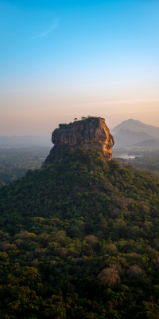
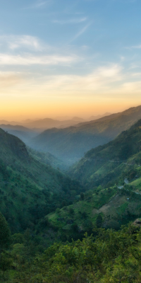
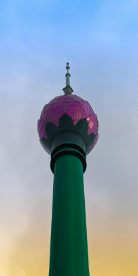
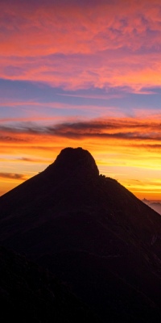
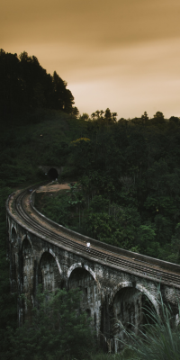
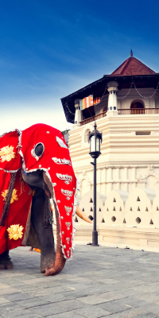
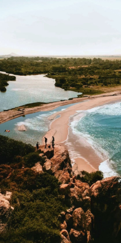
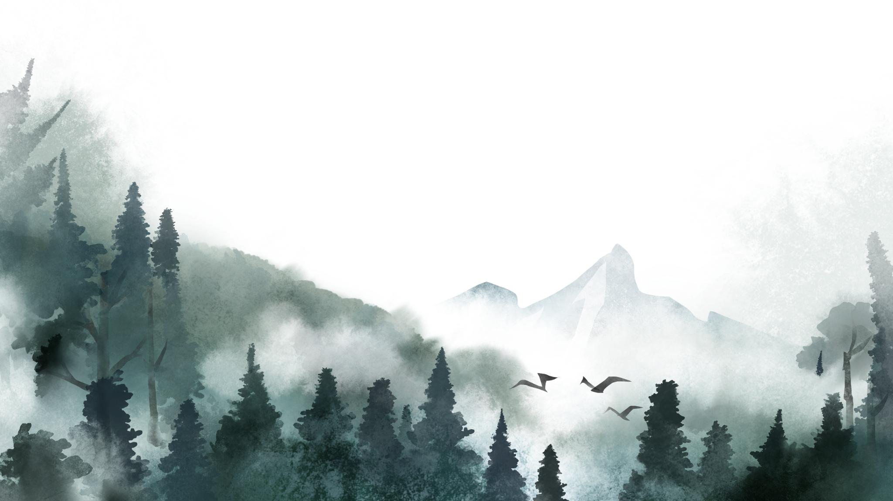
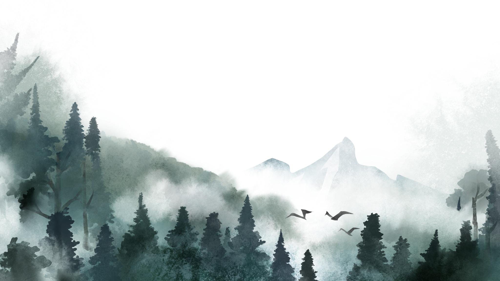

Explore Beautiful Sri Lanka

S

R
I

L

A

N

K

A
Sigiriya
Sigiriya, also known as Lion Rock, is an ancient rock fortress and palace ruins located in the central Matale District of Sri Lanka. This UNESCO World Heritage Site stands 200 meters high and features remarkable frescoes, landscaped gardens, and the famous Lion Gate. Built by King Kashyapa in the 5th century, it represents one of the best-preserved examples of ancient urban planning.
It's Time For A New
Adventure

 Explore

Explore
